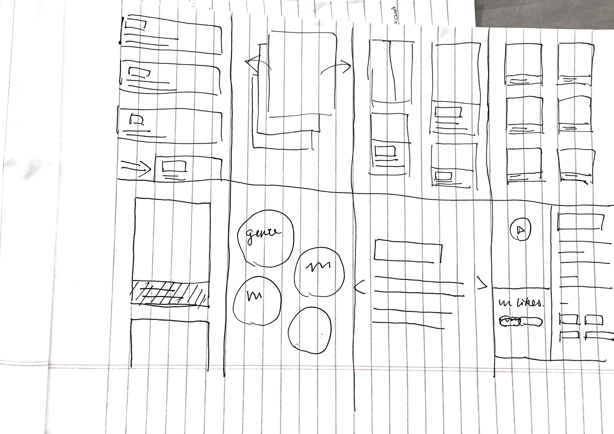
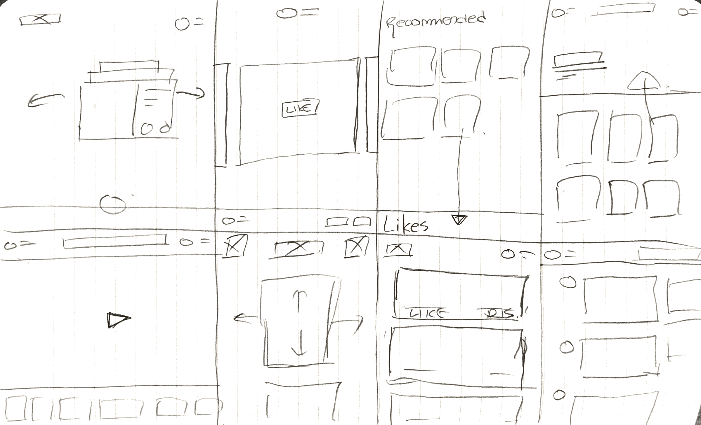
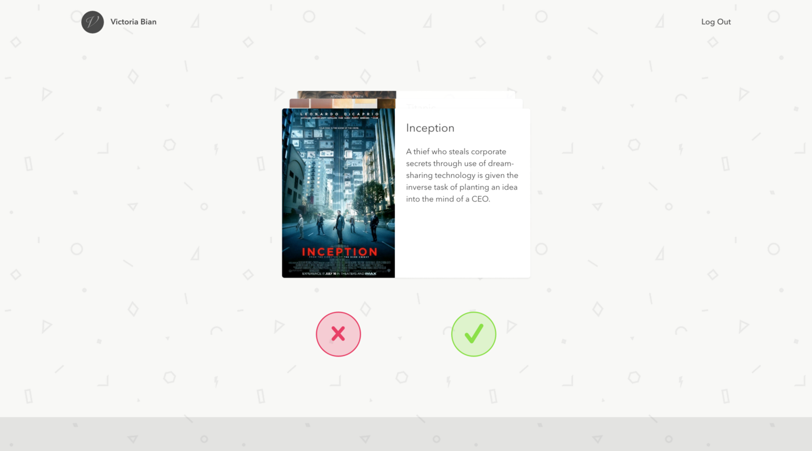
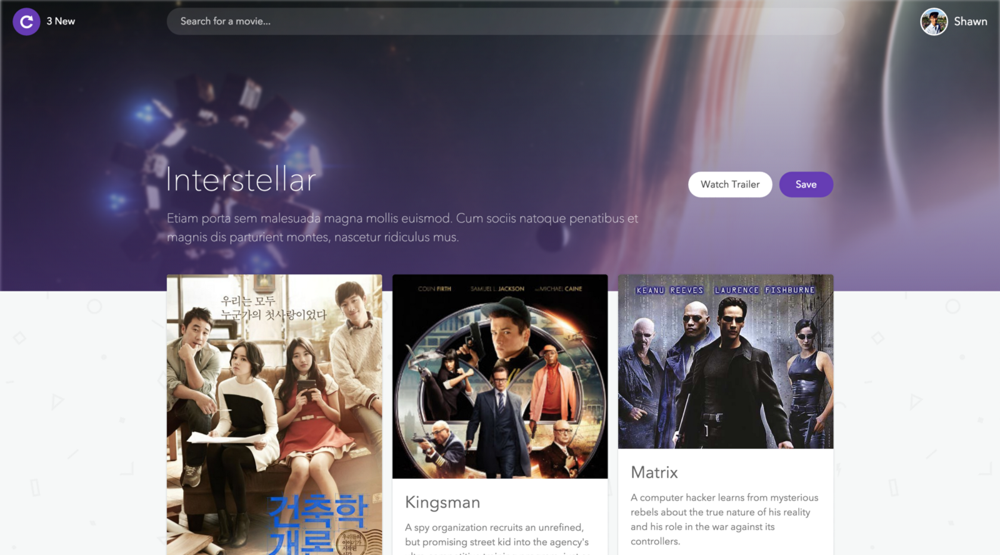
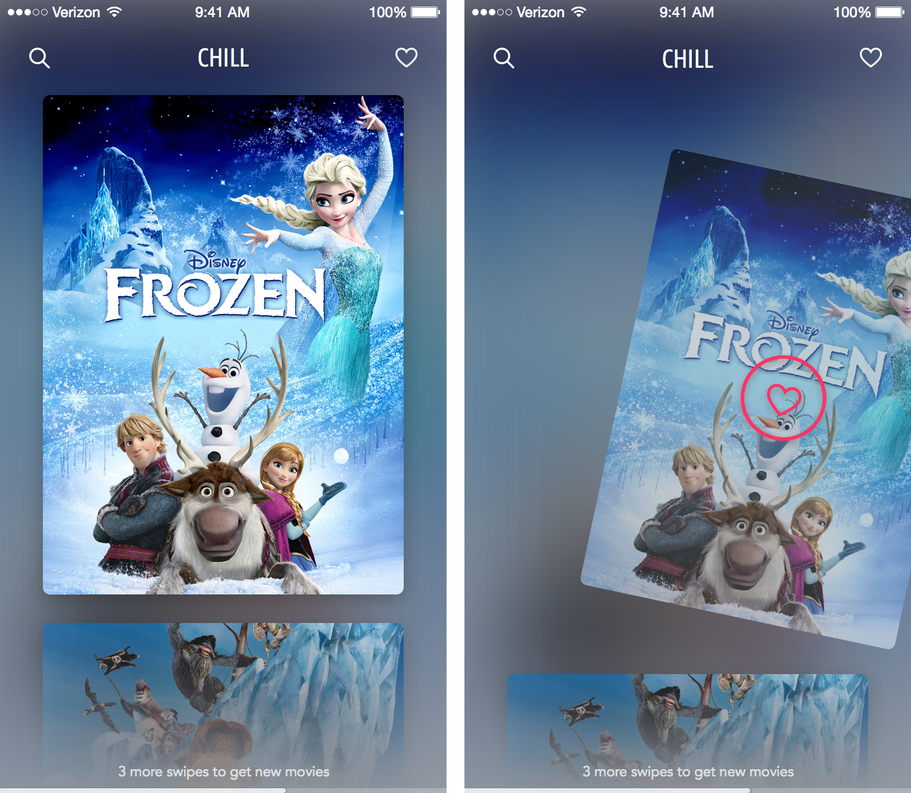
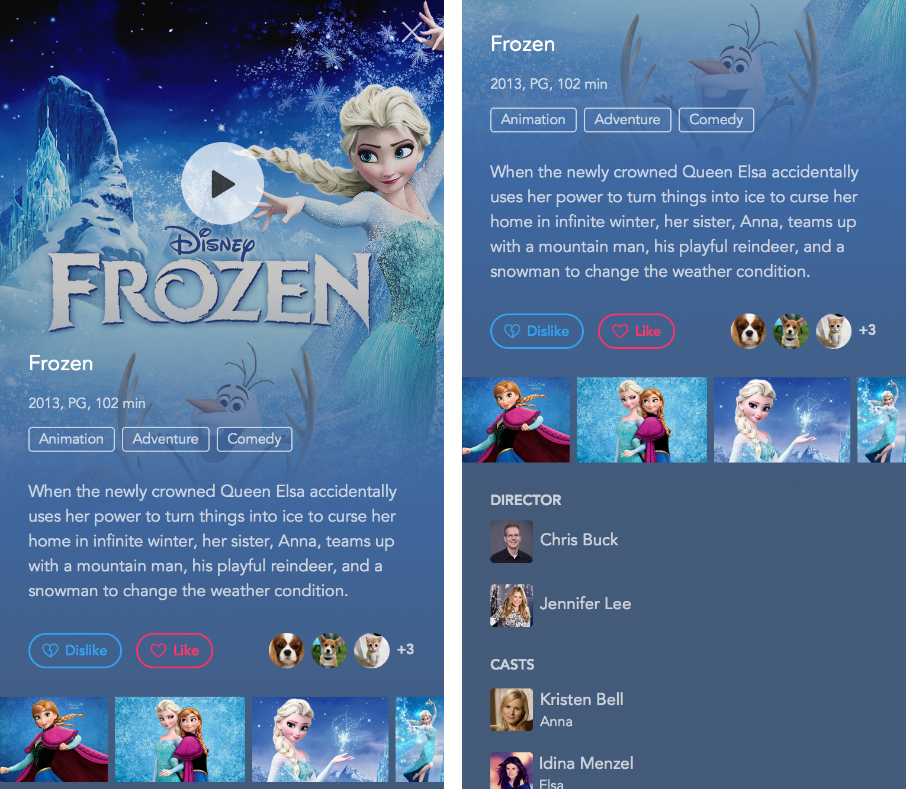
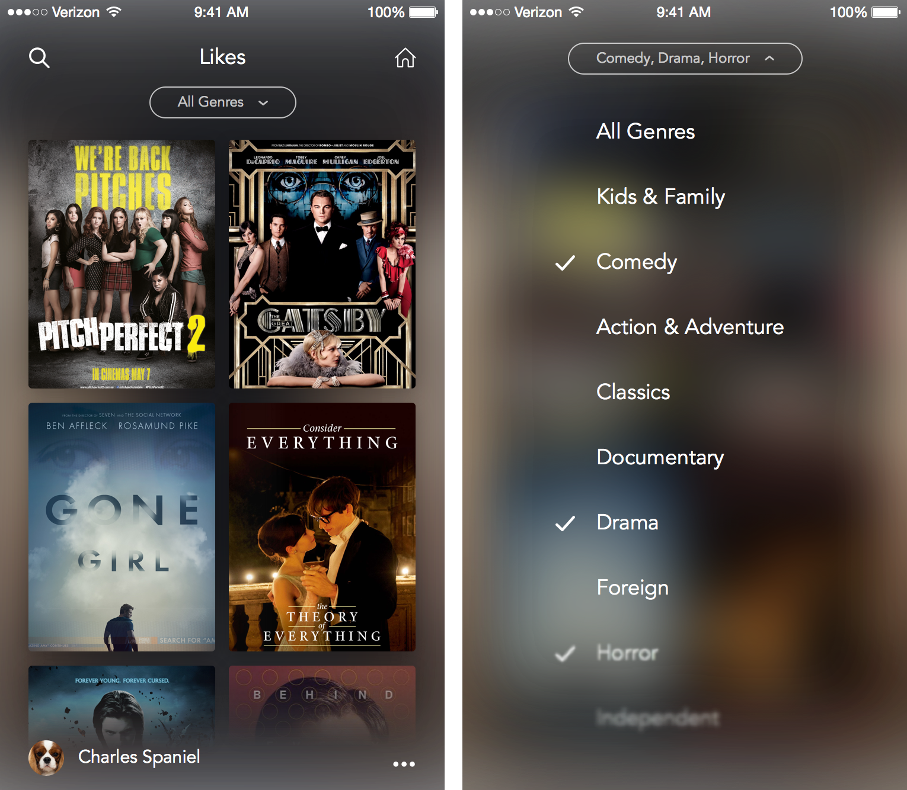
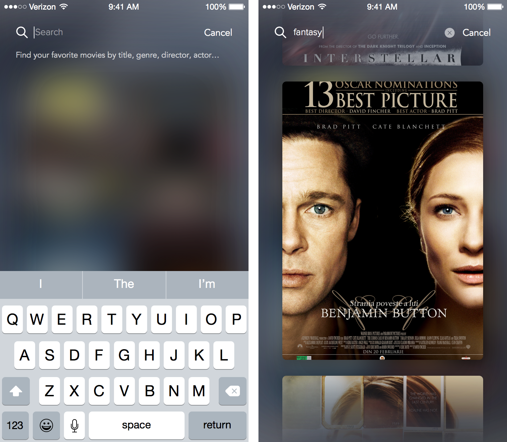
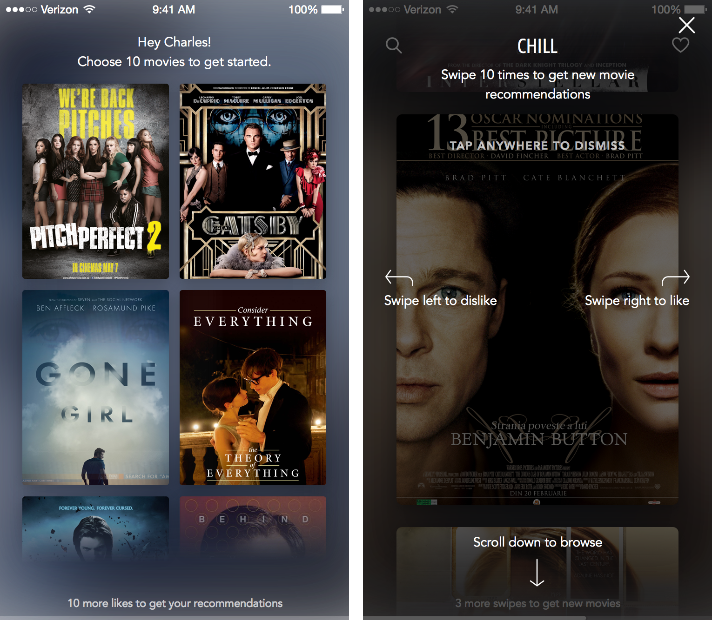
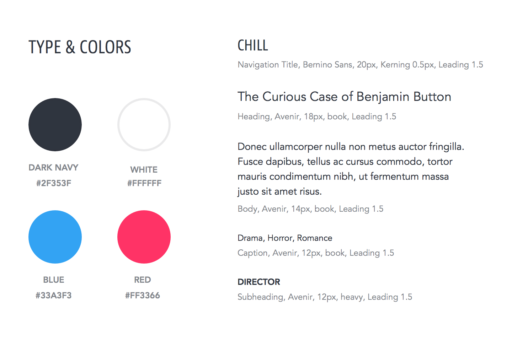

Intro
“What movie are we going to watch tonight?” How many times have you asked this question? Probably many times when you plan to enjoy the night with your friends. And then again, how long does it usually take to find something interesting to watch? I bet you’re tired of those hollywood actions and romance cliches playing in theaters. Sometimes, finding the right movie to watch takes much more time than the movie itself.
Problem
When we pick movies, we tend to pick those are similar to the ones we’ve watched before in terms of storyline, context, theme (message the movies try to convey). For example, I would like to find a movie that’s similar to “Inception”, so I go to iTunes, but all I can see are giant charts of popular and top movies rather than a list of movie related to “Inception”. To make this question more complicated, I grew my own interests over time as I watch more and more movies. Time traveling, multi-dimensional space, adventures are the particular themes that I like. But neither iTunes nor Google search ever learned from my streaming histories and give me recommendations based on them. Traditional movie apps, on the other hand, have simple rating system that do not take into account our own past experience and personal tastes.
Not everyone watches the most recent movies.
We watch movies based on our interests.
Validating our Hypothesis
We would like to validate this hypothesis — is this the problem faced by many others? To validate our hypothesis, I worked with Shawn Park to interview a dozen people about their ways of discovering movies.
Here are some of the questions we asked:
- How often do you go to theaters? If not often, why?
- Do you watch movie online? If so, what kind of movies do you usually watch online?
- What do you usually consider when you choose a movie to watch?
- How do you find the movie that you like?
We found out that:
- Many people go to theater only when they are with friends
- Quite a few of the interviewees have their own taste of movies and hold very strong and negative opinions to those movies that are not their “type”, for instance, Christy turns away from all horror movies and action movies
- If they like a movie, they will tend to find more movies that are either directed by the same director or starred by an actor they like
- They don’t really rely on reviews as those offered on IMDb and Rotten Tomatoes, but they do take into account their friends’ opinions about a movie
- They google trailers before they makes their decisions
“Personally I don’t like the action movies in theaters but the type of movies that I really like are usually not in theater.”
Although it’s not sufficient based on the feedbacks to make the assumption that a lot of movie lovers prefer watching movie at home (online) to going to theaters, it is fair to say that people who have watched movies online have also experienced trouble finding the right movies to play. And their decisions when choosing movies are largely dependent on their own interests which are usually impacted by the movies that they watched and enjoyed.
Prototype
Goal
Based on the feedbacks we got from the interviews, we decided that our goal is to figure out a means of collecting users’ preferences and give recommendations based on them.
Brainstorming
There are two stages for this app. In order to arrive at a solution that is both able to efficiently get input from users and able to give satisfying recommendations back to users, we further refined our value propositions.
- Save time: take away any redundant information, so that users can make decisions at a quick glance
- Simplify user interaction: the recommendation should work in a simple and binary (like / hate) way
Therefore, when designing the user experience, we first focused on streamlining the process of getting users’ interests.
We quickly did some low fidelity mockups using “Crazy Eights” approach. Basically, we brainstormed all the ideas we had and quickly sketched on paper within 40 seconds and repeat the same process 8 times to produce 8 different ideas in just 5 minutes.
We came up with solutions such as Q&A, list view, single movie view with swipe action, grid layout, etc.
 One of the solutions we really liked is a means of collecting users’ interests. Rather than asking people questions about their habits, such as themes and actors they like, we start with presenting users the main interface from the first time they use the app, where they can establish their preferences by selecting the movies. This way, the process of getting users’ interests is perfectly merged with the process of giving back recommendations because as picking the movies on the interface, recommendations get narrowed down based on their selections.
We eventually locked down the design into two possible versions:
Version 1: show user one movie — finger swipe interface
Version 2: show user multiple movies at a time — scroll and click
On the one hand, swipe-gesture focuses on one movie at a time, giving user more time to think through and encourages user to make a choice cautiously. The swipe-gesture is also very intuitive for users to indicate their preferences in a binary way with a simple, fun interaction.
On the other hand, scroll and click with multiple movies at once offers user more options to choose from at a glance. On top of that, scrolling has the least cost of action, yet still does a good job in keeping user engaged as the user scrolls down to explore more options.
Testing
To come to a conclusion, we conducted a second run of usability testings. We mocked up two views in web versions and prepared 20 movies for each one to let the user pick the movies that they like. While observing users’ interactions, we asked questions about usability of the layout and list out the factors that impacted their decision making.
 Here are some of the questions we asked:
- How did you make your decisions?
- How does the layout affect your decisions?
- Which interface do you prefer (one movie at a time, or multiple movie at once)?
Interestingly, out of the users we interviewed, most of them preferred browsing multiple movies at a time but they spent more time on single view version (one movie at a time).
“Scroll is interesting and pleasing, because I can go through all the posters very quickly”
“I feel like single view brings more attention to individual movies, as for multi view, you just jump around till you see something familiar or you like, so when I scroll I am looking for my style of movie”
“For single view, you have to see whether you like it or not because you can only say yes or no, when I am neutral about a movie, I would choose yes than no, whereas on multi view I can either save or not save”
We found that multi view allows them to “preview” all the movies at a time, and scrolling does not force them to choose. Users also tend to say more “yes” than “no” on single view when they hold neutral opinion about a movie.
Single view also has its merits: it’s easier for them to interact with larger element like a card with swipe gesture than clicking on a smaller area such as a “save” button.
We also learned about the factors that influence users’ decisions. Although our goal was to keep the content as concise as possible, it turned out that users didn’t really pay any attention to anything other than the poster itself. In addition, they mentioned that trailers could also help make a decision about the movie.
“Mostly look at the poster to get a glimpse about what the movie is, but not reading the description (that’s just me I guess)”
“Nope, I never looked at the description, I am too lazy to read so I am only looking at the poster”
“I will watch the trailer if I have no idea what’s about or poster itself is interesting”
One feature we missed out when we were prototyping is social network integration. Many users mentioned that they don’t watch movies by themselves most of the times, so they value their friends’ comments on movies when it comes to decision making.
“Friends’ comments matter, for example a popup with my friends’ comments will make a difference”
“l would use it if I am looking for movies to watch, wouldn’t go on it to just play around, so it would be helpful if a group of friends trying to decide”
From our study, we arrived at the following conclusion:
In terms of discovery, people prefer quick consumption of content through scroll. As for action, they prefer the convenience and sense of reward from swipe.
Solution
We decided to combine the merit of the single view and the multi view by designing an interface with scroll as a means of discovery and swipe as a means of action.
In terms of the layout, we opted for a three-screen layout to order the three main features of this app in a horizontal, linear space: Recommendations, Likes, and Search.
Recommendations
We decided to promote two main features to get the users engaged with the interface.
- Scroll to see more movies; swipe left or right to dislike or like a movie.
- Swipe ten times to get new recommendations based on the dislikes and likes on movies.
For the recommendation card, we decided to get rid of the synopsis and title, because most users make their decision quickly just by looking at the posters, which usually show the movie titles. Most of the times, people care about synopsis and other details when they have developed an initial interest in the movie and they would like to know more about it.
Card
The purpose of the card view is to provide more details about a movie. As such, our goal is to organize the information into a digestible layout. First we start with movie poster and trailer to set the tone of this page that’s carried over from the recommendation view. We present the information in the order of importance: title, genre, synopsis, call-to-actions, snapshots and casts.
Likes
To view all of the movies that you liked on Chill, simply click on the heart icon on the top right corner. Here, you can see all of your favorite movies on Chill in a grid view. We used the grid view to show more movies per screen because for Likes, it’s far more important to quickly go through movies that you have already discovered.
Search
To get better results on Chill, sometimes you need to explicitly tell the app what movies you like. That’s why we have Search. You can search by clicking on the search icon on the top-left corner from anywhere you are. You can search by title, genre, director, actor, or other metadata associated with the movie. We also present the search results in the same layout as the recommendations because the primary call to action (Like / Dislike) is the same.
Onboarding
Having a good first time user experience is key to reducing user confusion, especially for such a gesture-based interface. We designed the onboarding experience to be engaging from the very beginning by showing movies in the same grid layout and letting users to pick 10 movies to get started. In addition, we used an overlay on top of the interface along with arrows and a few words to tell the users what actions they can take.
Branding
We also created a design language to illustrate the overall style and mood for our app.
Retrospective
In retrospect, I really wish Chill could become a reality. Due to the technical difficulty of programming the recommendation system in a limited time, Chill still remains to be a pure concept on Sketch artboards. If we had more time working on it, we could have made it interactive to better demonstrate this concept.
Another improvement we can make for Chill is the social network integration. When I was designing Chill, a lot of interviewers mentioned how much they value their friends’ comments on movies and how much fun they could have if choosing movies could involve their friends as well.
Yet, we believe we have sketched out an exciting concept for reimagining the movie discovery experience. It was also an opportunity for me to refine my design process, from discovering the problem and interviewing users to prototyping and polishing the final design. With the learnings I’ve learned, perhaps someday, we will come back to make Chill a reality in the future :)